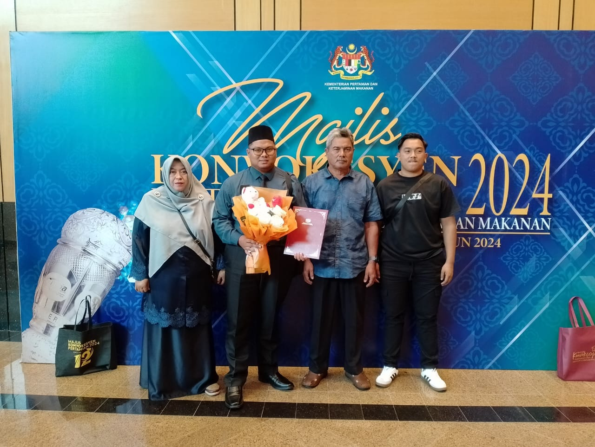

Educational background

Muhammad Amirul Aiman bin Mohamad Zaini is a dedicated Veterinary Assistant who currently serves at Taman Agrovet Perlis under the Department of Veterinary Services. At the age of 23, he has already gained valuable experience in livestock management and veterinary operations.
He pursued his studies at the Malaysian Veterinary Institute and successfully obtained a Malaysian Skills Certificate in veterinary studies. His educational journey provided him with practical knowledge and technical skills related to animal health, livestock care, disease prevention, and farm management.
After completing his studies, he successfully secured employment in Perlis through a government recruitment opportunity. Despite beginning his career at a young age, he has shown strong commitment and responsibility in handling daily veterinary tasks and farm operations.